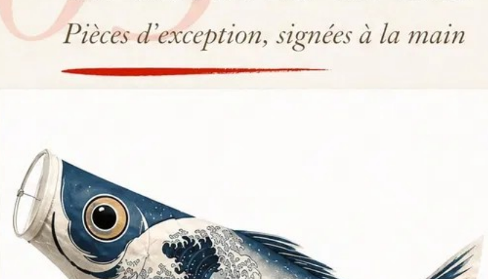
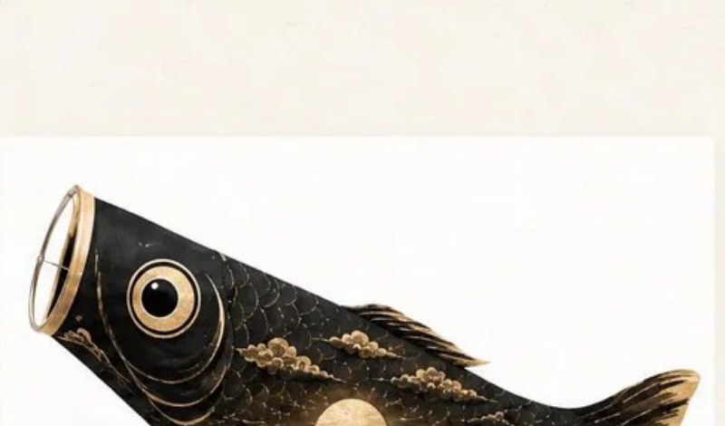
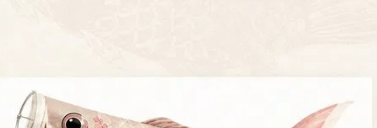

Koinobori House · Maison d’imaginaires
L’art de faire
flotter le temps.
Des koinobori choisis comme des paysages intérieurs. Des objets qui donnent au vent, à la couleur et au silence une place dans la maison.
Poursuivre le voyage
01 · Cartographie sensible
Les cinq mondes
Cinq portes pour choisir une atmosphère avant de choisir un objet. Chaque monde associe couleur, mouvement et imaginaire.
02 · Sélection
Créations BCDG




03 · La maison
Alain &
Catherine
Koinobori House est née d’un regard partagé sur les objets qui changent doucement l’atmosphère d’un lieu. Catherine apporte sa sensibilité aux couleurs et aux matières. Alain construit les récits, les collections et les rencontres.
Ensemble, ils composent une maison curieuse et sélective, attentive à la beauté d’usage comme à l’émotion première.
Nous découvrir04 · Magazine
Lifestyle
& Koi
Un rendez-vous régulier pour regarder les koi, les motifs, les intérieurs et les tendances décoratives à travers une sensibilité japonaise.
Lire le magazine
Le koi comme motif vivant
Le vermillon dans un intérieur calme
Lire les nuances du papier washi
05 · Bientôt
Arts de vivre
Une sélection appelée à grandir : objets de table, lumière et textiles pour prolonger la présence japonaise dans la maison.

器
Céramique
Objets de table et gestes quotidiens.

布
Textile
Trames, motifs et surfaces souples.

灯
Lumière
Éclairer sans effacer les ombres.
06 · Le manifeste
Ce que nous
voulons préserver

-
01
Le regard avant l’accumulation
Moins d’objets, mais une raison sensible de les faire entrer chez soi.
-
02
La matière avant l’effet
Des textures, des couleurs et des proportions qui supportent le temps.
-
03
Le récit avant le réflexe marchand
Comprendre un motif ou une atmosphère avant de choisir.
-
04
L’espace avant le remplissage
Laisser à chaque objet la place de respirer et de transformer le lieu.
07 · B2B & B2G
Des projets
à votre mesure
Hôtels, restaurants, boutiques, lieux culturels et collectivités peuvent nous transmettre un besoin particulier, un univers souhaité et une quantité minimale.
Décrire un projet